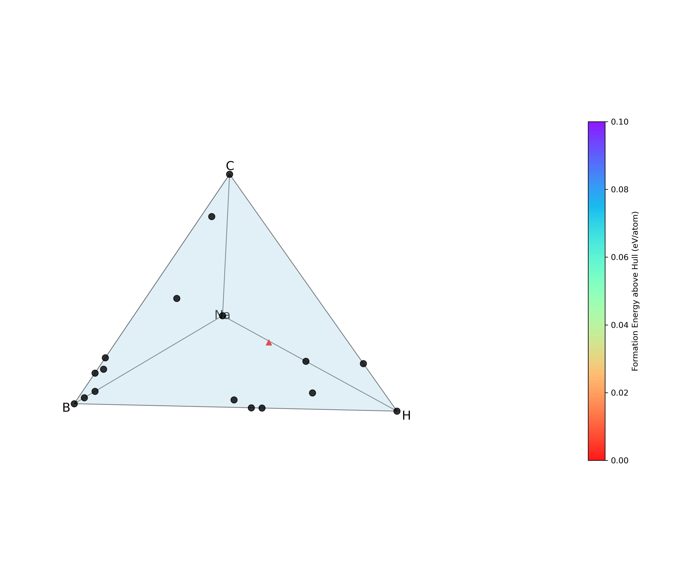

Tutorial
This tutorial demonstrates how to build and run exa-AMD on the GPU partition of the Perlmutter supercomputer to predict novel Na–B–H–C quaternary compounds.
1. Clone the Repository
Start by cloning the exa-AMD repository:
git clone https://github.com/ML-AMD/exa-amd.git
cd exa-amd
2. Install Dependencies
Follow the Installation instructions to create the required environment using Conda. After installation, make sure to activate the environment:
conda activate amd_env
3. Prepare the Data and VASP Setup
Ensure you have a working VASP installation and access to the latest PAW potentials containing kinetic energy densities for meta-GGA calculations .
If you do not already have it:
Log into your account on the VASP website
Navigate to the “Downloads” section
Download the latest archive (e.g., potpaw_PBE.52.tar.gz)
Once downloaded, extract the archive and place the resulting potpaw_PBE directory anywhere on your system. You will reference its location in your JSON config using the vasp_pot_dir parameter.
Next, download and extract the initial_structures dataset which contains a set of initial crystal structures used by the workflow.
4. Prepare the JSON Configuration File
Copy the default Perlmutter configuration:
cp configs/perlmutter_quaternary.json configs/my_config_perlmutter.json
Edit the following fields in my_config_perlmutter.json:
cms_dir:Absolute path to your cms_dir directorywork_dir: A scratch directory for intermediate filesvasp_work_dir: A work directory for running VASP calculationsvasp_pot_dir: Path to your potpaw_PBE directoryinitial_structures: Path to the initial_structures directory (downloaded in the previous section)post_processing_output_dir: Absolute path to the directory that will store every post-processing artifact. If this key is omitted or left empty, the entire post-processing stage is skipped.mp_rester_api_key: your Materials Project API key (see https://docs.materialsproject.org). This key is mandatory whenever post_processing_output_dir` is provided.
5. Prepare the Parsl Configuration
Parsl configurations must be placed inside the parsl_configs/ directory so that they can be automatically discovered by exa-AMD at runtime.
Start by copying the default Perlmutter configuration:
cp parsl_configs/perlmutter.py parsl_configs/my_perlmutter.py
Then edit my_perlmutter.py:
a. Change the registration name
At the bottom of the file, update register_parsl_config() to reflect the new config name. This value have to match the value you will set in your JSON config file (the parsl_config field).
# Before:
register_parsl_config("perlmutter_premium", PerlmutterConfig)
# After:
register_parsl_config("my_perlmutter", PerlmutterConfig)
b. Update each executor
The Perlmutter configuration defines five separate executors:
Three that run on GPU nodes (for VASP and CGCNN tasks)
Two that run on CPU nodes (for structure generation and selection)
For each executor, update the following fields in the SlurmProvider:
account: your NERSC allocation account (e.g., m1234)
qos: the QOS for that job (e.g., regular, premium)
The account and qos values used in the Parsl configuration are exactly the same
as the ones you would provide when running with Slurm directly on Perlmutter,
using commands like salloc, srun, or sbatch.
For example, if you normally run:
salloc -A m1234 -q regular -C gpu
Then in your Parsl config, you should use:
account="m1234"
qos="regular"
constraint="gpu"
Here is an example:
provider=SlurmProvider(
account="your_gpu_account", # ← CHANGE ACCORDINGLY
qos="your_gpu_qos", # ← CHANGE ACCORDINGLY
constraint="gpu",
...
)
Note
The account can also be specified at runtime via the command-line arguments.
Make sure you update all five executors accordingly, using your appropriate account and qos for CPU and GPU resources.
Important
All Parsl configuration files must be placed inside the parsl_configs/ directory.
For details on Parsl configuration options, see the official documentation.
c. Update JSON Configuration
After registering the new Parsl configuration, update your JSON config file to reference it:
{
...
"parsl_config": "my_perlmutter"
}
exa-AMD will now automatically discover and use the my_perlmutter configuration at runtime.
6. Run the Workflow
Once everything is configured, run the full exa-AMD workflow from a login node of Perlmutter:
export PYTHONPATH=$(pwd):$PYTHONPATH
python amd.py --config configs/my_config_perlmutter.json --vasp_nnodes 2
This will launch the four steps:
generate_structures()— structure generationrun_cgcnn()— formation energy predictionselect_structures()— structure selectionvasp_calculations()— first-principles calculationscmd_convex_hull_color()— post-processing
Progress and logs will be printed to stdout/stderr.
Post-processing workflow
The post-processing step involves multiple substeps:
Collection of results: Gather relaxed crystal structures and total energies from each VASP directory. For magnetic systems, the magnetic moments are also parsed and stored.
Formation-energy evaluation & convex-hull construction: Compute the formation energy of every structure relative to reference elemental phases, then build (or update) the convex hull for the chemical system. Structures on or near the hull are considered potentially stable; those far above the hull are deemed metastable or unstable.
Selection of promising structures: Identify and copy the candidate structures to a dedicated folder for deeper analysis or experimental follow-up.
Visualization: Generate an updated phase diagram that plots the convex hull and highlights all computed structures.
7. Check the Results
After the workflow completes, you should verify that all stages ran successfully by inspecting the contents of the work directory (work_dir), the VASP work directory (vasp_work_dir) and the post-processing directory (post_processing_output_dir).
a. Work directory
Inside your specified work_dir, you should see a subdirectory named after the elements string (i.e., Na-B-C) with the following contents:
work_dir/
└── Na-B-H-C
├── new/
├── POTCAR
├── structures/
└── test_results.csv
b. VASP Directory
Your vasp_work_dir should contain subfolders for VASP calculation outputs and a temporary workspace used during post-processing.
vasp_work_dir/
└── Na-B-H-C
├── 1/
├── 2/
├── 3/
├── ...
├── 10/
├── energy.dat
├── mp_int_stable.dat
├── stable_phases_work_dir/
└── vasp_calc_result.csv
Each numbered folder corresponds to a VASP calculation for a selected structure.
c. Final Output
The post-processing output directory should look like the following:
post_processing_out_dir/
├── hull.dat
├── hull_plot.png # convex-hull phase diagram
├── mp_int_stable.dat
├── NaBHC_quaternary.csv
└── selected/ # candidate structures
{kind=link}

Figure – The hull_plot.png file listed above, showing the convex-hull phase diagram generated in this final step.
Your run have to produce this same hull_plot.png.